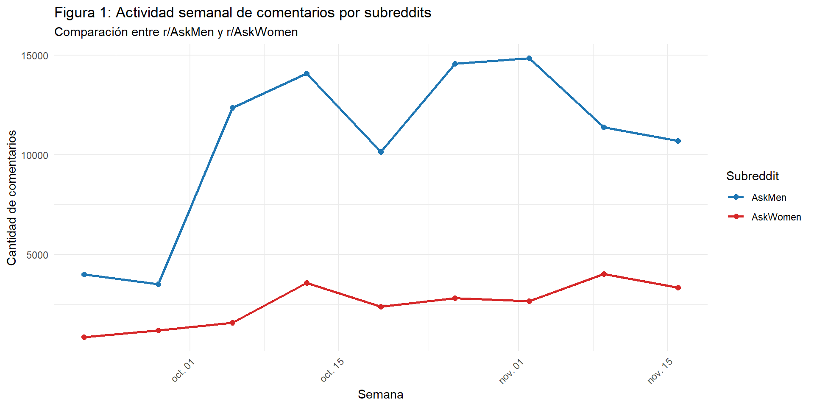

# Lista de subreddits a procesar
subreddits = ["AskMen", "AskWomen"]
total_comentarios = 0
for subreddit_name in subreddits:
logger.info(f"Procesando r/{subreddit_name}...")
subreddit = reddit.subreddit(subreddit_name)
for submission in subreddit.top(time_filter="day", limit=1000):
submission.comments.replace_more(limit=None)
for comment in submission.comments:
try:
# Preparar datos
datos = (
subreddit_name,
str(submission.author) if submission.author else '[deleted]',
submission.id,
submission.title,
submission.num_comments,
submission.over_18,
submission.score,
str(comment.author) if comment.author else '[deleted]',
comment.id,
comment.body,
comment.score,
datetime.fromtimestamp(comment.created_utc)
)
# Insertar en la base de datos (ignora duplicados)
cursor.execute("""
INSERT INTO reddit_comments
(subreddit_nombre, submission_autor, submission_id, submission_titulo,
submission_numcom, submission_nsfw, submission_puntaje,
comentario_autor, comentario_id, comentario_body,
comentario_puntaje, comentario_fecha)
VALUES (%s, %s, %s, %s, %s, %s, %s, %s, %s, %s, %s, %s)
ON CONFLICT (comentario_id) DO NOTHING
""", datos)
total_comentarios += 1
except Exception as e:
logger.error(f"Error procesando comentario {comment.id}: {str(e)}")
continueMisoginia Digital: Análisis del Lenguaje y las Emociones en Reddit a través de Subreddits Diferenciados por Género
Métodos Computacionales para las Ciencias Sociales
Cristóbal Mejías G. & Felipe Vega G.
28 de noviembre de 2025
Introducción
- Misoginia digital como forma contemporánea de violencia de género, siendo Reddit un espacio clave.
- Se analizará las diferencias de interacción entre r/AskMen y r/AskWomen, poniendo énfasis en el lenguaje y las emociones en los discursos hostiles.
- Se presenta un vacío en estudios de misoginia a través del lenguaje y las emociones en espacios cotidianos no radicalizados.
Marco conceptual / Antecedentes
Misoginia: Mecanismo que castiga a las mujeres que desafían al patriarcado (Manne, 2017; Moloney & Love, 2018)
Arquitectura digital: Plataformas no neutrales, su diseño facilita la reproducción de desigualdades de género (Rubio Martín & Gordo López, 2021)
Dinámicas de género en Reddit: Narrativas antifeministas en Reddit. Mayor agresividad contra mujeres que hacia hombres (Coppolillo, 2025)
Emociones y Misoginia digital: Emociones negativas pueden transformarse en hostalidad hacia mujeres (Tietjen & Tirkkonen, 2023).
Pregunta, objetivo de investigación
¿Cómo se expresa la misoginia digital en comunidades digitales diferenciadas por género, específicamente en r/AskMen y r/AskWomen?
General: Investigar de qué manera se expresa la misoginia digital en comunidades digitales diferenciadas por género, específicamente en r/AskMen y r/AskWomen.
Específicos: i) Identificar la prevalencia de discursos misóginos en los comentarios publicados. ii) Evaluar la relación entre las emociones y los discursos misóginos en los comentarios publicados. iii) Evaluar la relación entre los discursos misóginos y las interacciones digitales que se dan.
Hipótesis
H1: La proporción de comentarios misóginos es mayor en AskMen que en AskWomen.
H2a: Los usuarios que publican comentarios misóginos presentan una mayor actividad que quienes publican comentarios no misóginos.
H2b: Los comentarios misóginos reciben un menor puntaje de apoyo que los comentarios no misóginos.
H3: La proporción de comentarios con emociones negativas es mayor en AskMen que en AskWomen.
H4: Los comentarios que expresan emociones positivas tienen una menor probabilidad de ser clasificados como misóginos.
Tutorial: Parte 1
Tutorial: Parte 2

Tutorial: Procesamiento de datos I
#---- 2. Importar datos brutos ----
datos_bruto <- read_csv("datos_bruto.csv")
#---- 3. Procesamiento de datos brutos ----
datos_proc <- datos_bruto %>%
distinct(comentario_id, .keep_all = TRUE)
datos_proc <- datos_proc %>%
filter(comentario_puntaje < -1 | comentario_puntaje > 1)
datos_proc <- datos_proc %>%
group_by(comentario_autor) %>%
mutate(n_comentario_autor = n()) %>%
ungroup()
datos_proc <- datos_proc %>%
mutate(comentario_body = na_if(comentario_body, "[removed]"),
comentario_body = na_if(comentario_body, "None"))
datos_proc <- na.omit(datos_proc)Tutorial: Procesamiento de datos 2
#---- 4. Procesamiento de datos: solo género ----
palabras_genero <- c("relationship", "boy", "man", "men", "boyfriend", "husband",
"partner", "girl", "woman", "women", "girlfriend", "wife", "ex")
palabras_genero <- paste0("\\b(", paste(palabras_genero, collapse = "|"), ")\\b")
datos_genero <- datos_proc %>%
filter(str_detect(comentario_body, regex(palabras_genero, ignore_case = TRUE)) |
(str_detect(submission_titulo, regex(palabras_genero, ignore_case = TRUE))))
datos_genero <- datos_genero %>%
filter(str_count(comentario_body, "\\w+") >= 4)
#---- 5. Sampleo de bases de datos acorde a la actividad de cada subreddit ----
set.seed(123)
sample_askwomen <- datos_genero %>%
filter(subreddit_nombre == "AskWomen") %>%
slice_sample(n = 846)
sample_askmen <- datos_genero %>%
filter(subreddit_nombre == "AskMen") %>%
slice_sample(n = 3609)
datos_genero <- bind_rows(sample_askwomen, sample_askmen)
write.csv(datos_genero, "datos_genero.csv")Tutorial: Modelo detector de sexismo
#---- 1. Modelo 1 ----
classifier = pipeline(
"text-classification",
model="NLP-LTU/bertweet-large-sexism-detector",
device=-1,
max_length=512
)
datos_genero = pd.read_csv("datos_genero.csv")
# Configuración
batch_size = 32
# Preparar comentarios
datos_genero['comentario_body'] = datos_genero['comentario_body'].astype(str)
comentario_body = datos_genero['comentario_body'].tolist()
# Procesar en batches
resultados_comment = []
total_batches = (len(comentario_body) + batch_size - 1) // batch_size
inicio = time.time()
for i in range(0, len(comentario_body), batch_size):
batch = comentario_body[i:i+batch_size]
batch_results = classifier(batch,
truncation=True)
resultados_comment.extend(batch_results)
if (i // batch_size) % 50 == 0 and i > 0:
gc.collect()
batch_num = (i // batch_size) + 1
elapsed = time.time() - inicio
est_total = (elapsed / batch_num) * total_batches
est_restante = est_total - elapsed
velocidad = (i + len(batch)) / elapsed
print(f"Batch {batch_num}/{total_batches} | Procesados: {i+len(batch)}/{len(comentario_body)} | "
f"Velocidad: {velocidad:.2f} coment/seg | Restante: {est_restante/60:.1f} min")
datos_genero['categoria_odio'] = [r['label'] for r in resultados_comment]
datos_genero['score_odio'] = [r['score'] for r in resultados_comment]Tutorial: Modelo clasificador de emociones
##---- 2. MODELO 2 -----
classifier = pipeline(
"text-classification",
model="bhadresh-savani/distilbert-base-uncased-emotion",
return_all_scores=True,
device=-1,
max_length=512
)
# Preparar comentarios
datos_genero['comentario_body'] = datos_genero['comentario_body'].astype(str)
comentario_body = datos_genero['comentario_body'].tolist()
# Procesar en batches
resultados_comment = []
total_batches = (len(comentario_body) + batch_size - 1) // batch_size
inicio = time.time()
for i in range(0, len(comentario_body), batch_size):
batch = comentario_body[i:i+batch_size]
batch_results = classifier(batch,
truncation=True)
resultados_comment.extend(batch_results)
if (i // batch_size) % 50 == 0 and i > 0:
gc.collect()
batch_num = (i // batch_size) + 1
elapsed = time.time() - inicio
est_total = (elapsed / batch_num) * total_batches
est_restante = est_total - elapsed
velocidad = (i + len(batch)) / elapsed
print(f"Batch {batch_num}/{total_batches} | Procesados: {i+len(batch)}/{len(comentario_body)} | "
f"Velocidad: {velocidad:.2f} coment/seg | Restante: {est_restante/60:.1f} min")
datos_genero['emocion_principal'] = [max(r, key=lambda x: x['score'])['label'] for r in resultados_comment]
datos_genero['score_principal'] = [max(r, key=lambda x: x['score'])['score'] for r in resultados_comment]
datos_genero.to_csv("datos_ask_genero_final.csv", index=False, encoding='utf-8-sig')Tutorial: Último procesamiento
datos_genero_final <- datos_genero_final %>%
mutate(categoria_odio = case_when(
categoria_odio == "not sexist" ~ 0,
categoria_odio == "sexist" ~ 1))
datos_genero_final <- datos_genero_final %>%
mutate(categoria_odio = case_when(
score_odio >= 0.95 ~ categoria_odio,
score_odio < 0.95 ~ NA))
datos_genero_final <- datos_genero_final %>%
mutate(emocion_principal = case_when(
score_principal >= 0.5 ~ emocion_principal,
score_principal < 0.5 ~ NA)) %>%
mutate(emocion_predominante = case_when(
emocion_principal %in% c("sadness", "anger", "fear") ~ 0,
emocion_principal %in% c("joy","love","surprise") ~ 1))Análisis: Variables
| Tabla 1: Variables incluidas en el análisis: Definición de cada variable del dataset procesado | |
|---|---|
| Definición de cada variable | |
| Variable | Definición |
| subreddit_nombre | Nombre del subreddit de donde proviene la publicación (AskMen o AskWomen). |
| submission_autor | Usuario que creó la publicación original. |
| submission_id | Identificador único de la publicación en Reddit. |
| submission_titulo | Título de la publicación realizada en el subreddit. |
| submission_numcom | Número total de comentarios que recibió la publicación. |
| submission_NSFW | Indica si la publicación fue marcada como NSFW (Not Safe For Work) (0 = no, 1 = sí). |
| submission_puntaje | Puntaje total de la publicación (upvotes – downvotes). |
| comentario_autor | Usuario que escribió el comentario. |
| comentario_id | Identificador único de cada comentario en Reddit. |
| comentario_body | Texto completo del comentario. |
| comentario_puntaje | Puntaje del comentario (upvotes – downvotes). |
| comentario_fecha | Fecha en que se realizó el comentario (formato día-mes-año). |
| comentario_hora | Hora en que se realizó el comentario. |
| n_comentario_autor | Número total de comentarios sustantivos por cada usuario. |
| categoria_odio | Variable binaria generada por el modelo de sexismo (1 = sexista, 0 = no sexista, NA = baja confianza). |
| score_odio | Probabilidad asignada por el modelo de que el comentario sea sexista. |
| emocion_principal | Emoción predominante detectada en el comentario (anger, fear, sadness, joy, love, surprise). |
| score_principal | Probabilidad asociada a la emoción principal seleccionada. |
| emocion_predominante | Variable binaria que clasifica emociones negativas (0) y positivas (1). |
Actividad semanal
Estadísticos Descriptivos
| Tabla 2: Características descriptivas de la muestra final | |||||
|---|---|---|---|---|---|
| Distribución de comentarios, autores, sexismo y emociones por subreddit | |||||
| Subreddit | Total comentarios | Autores únicos | % de la muestra | % sexistas | % emociones negativas |
| AskMen | 3,609 | 2,564 | 81.0% | 3.6% | 46.8% |
| AskWomen | 846 | 669 | 19.0% | 0.1% | 40.6% |
H1: La proporción de comentarios misóginos es mayor en AskMen que en AskWomen
| Tabla 3: Test de diferencia de proporciones para comentarios sexistas (H1) | |||||||||
|---|---|---|---|---|---|---|---|---|---|
| Método | Hipótesis | Prop. AskMen | Prop. AskWomen | M₁ - M₂ | Chi² | df | p | 95% CI (inf) | 95% CI (sup) |
| 2-sample test for equality of proportions with continuity correction | greater | 0.0335 | 0.0012 | 0.0323 | 25.7195 | 1 | <0.001 | 0.0263 | 1.0000 |
H2A: Los usuarios que publican comentarios misóginos presentan una mayor actividad que quienes publican comentarios no misóginos
| Tabla 4: Diferencia de medias en la actividad según tipo de comentario (H2a) | ||||||||
|---|---|---|---|---|---|---|---|---|
| Comparación de la actividad entre comentarios sexistas y no sexistas | ||||||||
| Method | Alternative | Mean (No sexista) | Mean (Sexista) | M₀ − M₁ | t | df | p | 95% CI |
| Welch Two Sample t-test | less | 10.90 | 14.43 | −3.53 | −2.13 | 133.42 | 0.0177 | [-Inf, -0.78] |

H2B: Los comentarios misóginos reciben un menor puntaje de apoyo que los comentarios no misóginos
| Tabla 5: Diferencia de medias en el puntaje de comentarios según presencia de sexismo (H2b) | ||||||||
|---|---|---|---|---|---|---|---|---|
| Comparación del puntaje entre comentarios sexistas y no sexistas | ||||||||
| Method | Alternative | Mean (No sexista) | Mean (Sexista) | M₀ − M₁ | t | df | p | 95% CI |
| Welch Two Sample t-test | greater | 28.93 | 16.48 | 12.46 | 2.63 | 160.58 | 0.0047 | [4.61, Inf] |
H3: La proporción de comentarios con emociones negativas es mayor en AskMen que en AskWomen
| Tabla 6: Test de diferencia de proporciones para emociones negativas entre subreddits (H3 | |||||||||
|---|---|---|---|---|---|---|---|---|---|
| Resultados del test de diferencia de proporciones | |||||||||
| Método | Hipótesis | Prop. AskMen | Prop. AskWomen | M₁ - M₂ | Chi2 | df | p | 95% CI (inf) | 95% CI (sup) |
| 2-sample test for equality of proportions with continuity correction | greater | 0.4683 | 0.4058 | 0.0625 | 9.886 | 1 | <0.001 | 0.0298 | 1 |

H4: Los comentarios que expresan emociones positivas tienen una menor probabilidad de ser clasificados como misóginos
| Tabla 7: Modelo logit de probabilidad de comentario misógino según tipo de emoción (H4) | ||||||||
|---|---|---|---|---|---|---|---|---|
| Probabilidad de comentario sexista según emoción positiva | ||||||||
| Predictor | B (log-odds) | SE | Wald | gl | p | OR | 95% CI (inf) | 95% CI (sup) |
| Emoción positiva (1) | −0.530 | 0.192 | 7.628 | 1 | 0.006 | 0.589 | 0.402 | 0.855 |
| Constante | −3.230 | 0.125 | 672.474 | 1 | < 0.001 | 0.040 | 0.031 | 0.050 |
Conclusiones
Mayor proporción de comentarios misóginos y emocionales negativos en AskMen, coherente con entornos masculinizados que amplifican discursos hostiles.
Usuarios misóginos participan más (H2a) pero reciben menos apoyo (H2b). El discurso circula, pero no necesariamente es validado en Reddit.
Comentarios con emociones positivas tienen 41% menos probabilidad de ser misóginos, demostrando el rol inhibidor de lo emocionalmente positivo.
La misoginia digital es multifactorial, depende del tipo de emoción, el diseño de la plataforma y las dinámicas específicas de género.
Gracias por su atención !
Referencias bibliográficas
Aggarwal, J., Rabinovich, E., & Stevenson, S. (2020). Exploration of gender differences in COVID-19 discourse on reddit. arXiv preprint arXiv:2008.05713.
Coppolillo, E. (2025). Women who hate men: a comparative analysis across extremist Reddit communities. Scientific Reports, 15(1), 13952.
Dutta, A., Banducci, S., & Camargo, C. Q. (2025). Divided by discipline? A systematic literature review on the quantification of online sexism and misogyny using a semi-automated approach. Scientometrics, 1-57.
Fontanella, L., Chulvi, B., Ignazzi, E., Sarra, A., & Tontodimamma, A. (2024). How do we study misogyny in the digital age? A systematic literature review using a computational linguistic approach. Humanities and Social Sciences Communications, 11(1), 1-15.
Garcia, D., Kappas, A., Küster, D., & Schweitzer, F. (2016). The dynamics of emotions in online interaction. Royal Society open science, 3(8), 160059.
Manne, K. (2017). Down girl: The logic of misogyny. Oxford Academic, New York.
Moloney, M. E., & Love, T. P. (2018). Assessing online misogyny: Perspectives from sociology and feminist media studies. Sociology Compass, 12(5), e12577.
Mulac, A., Giles, H., Bradac, J. J., & Palomares, N. A. (2013). The gender-linked language effect: An empirical test of a general process model. Language Sciences, 38, 22-31.
Rubio Martín, M. J., & Gordo López, Á. J. (2021). La perspectiva tecnosocial feminista como antídoto para la misoginia online.
Sawicki, J., & Solska, D. (2024). Decoding gender bias through a textual exploration of Reddit /r/MensRights community. Beyond Philology, 1(21), 167-202. https://doi.org/10.26881/bp.2024.1.06
Scholz, S., Stang, P., Weiss, M., & Winkler, C. (2025). Changing conversations: The rise of gender and sexuality discourse on Reddit. Archives of Sexual Behavior, 54, 1–5. https://doi.org/10.1007/s10508-024-03051-9
Stevens, F., Enock, F. E., Sippy, T., Bright, J., Cross, M., Johansson, P., ... & Margetts, H. Z. (2024). Women are less comfortable expressing opinions online than men and report heightened fears for safety: surveying gender differences in experiences of online harms. arXiv preprint arXiv:2403.19037.
Tietjen, R.R., Tirkkonen, S.K. The Rage of Lonely Men: Loneliness and Misogyny in the Online Movement of “Involuntary Celibates” (Incels). Topoi 42, 1229–1241 (2023). https://doi.org/10.1007/s11245-023-09921-6